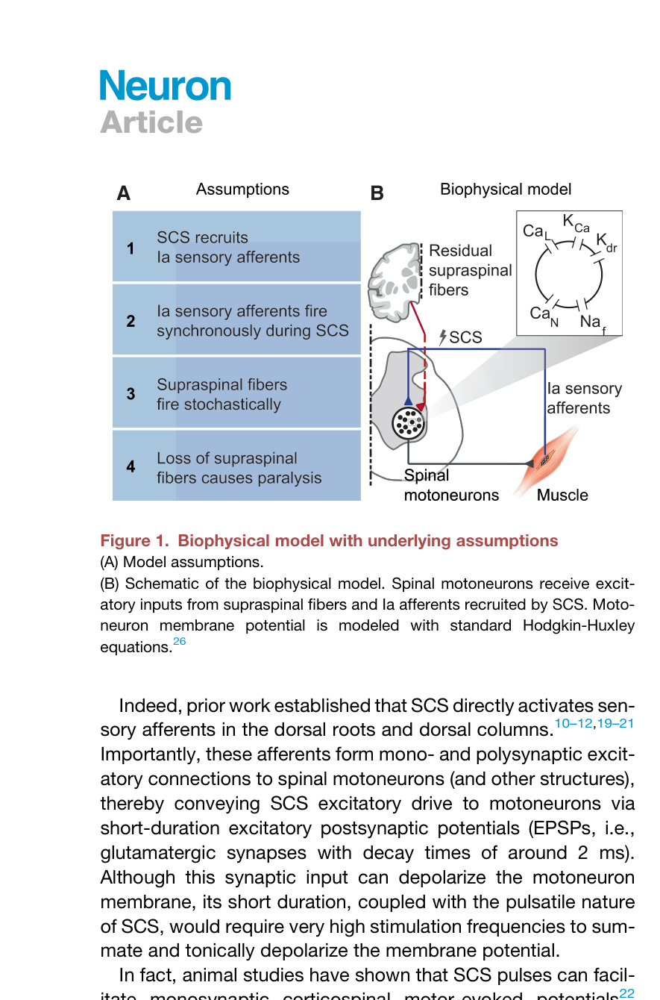
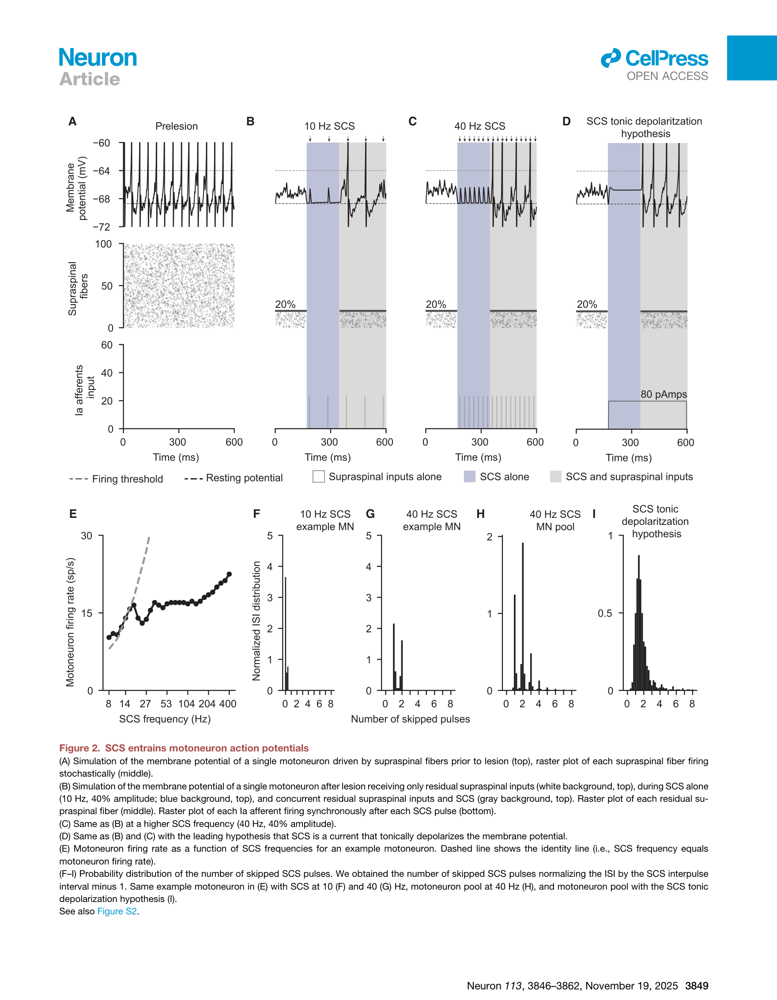
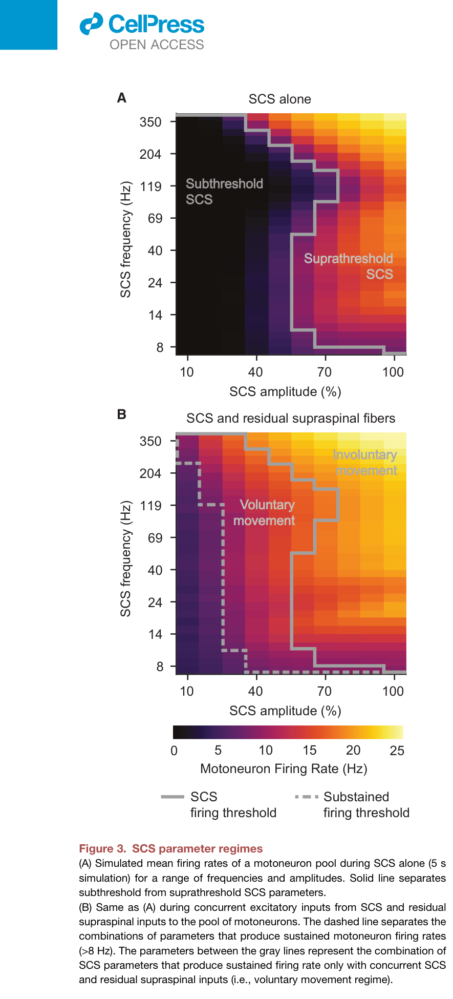
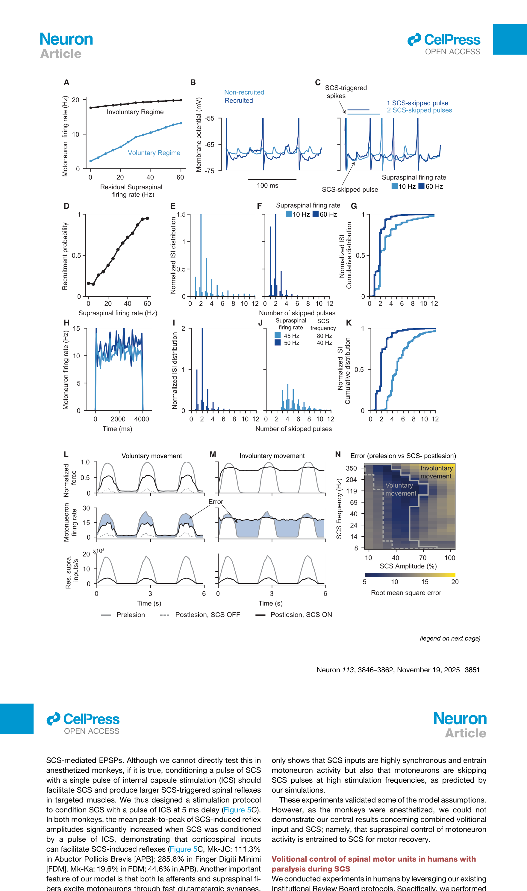
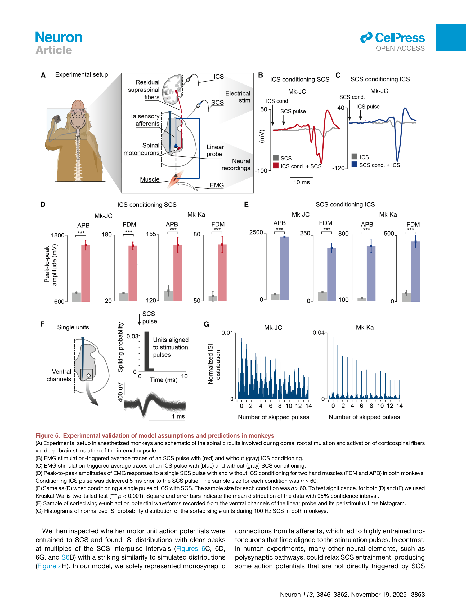
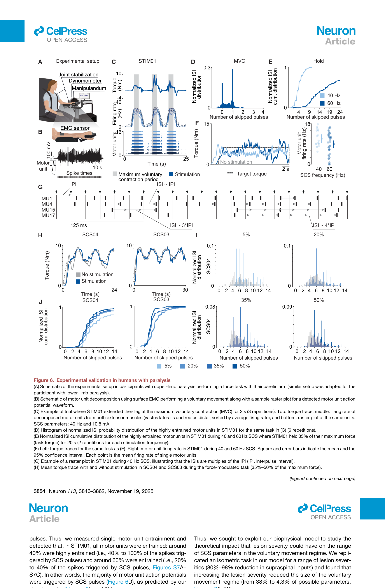
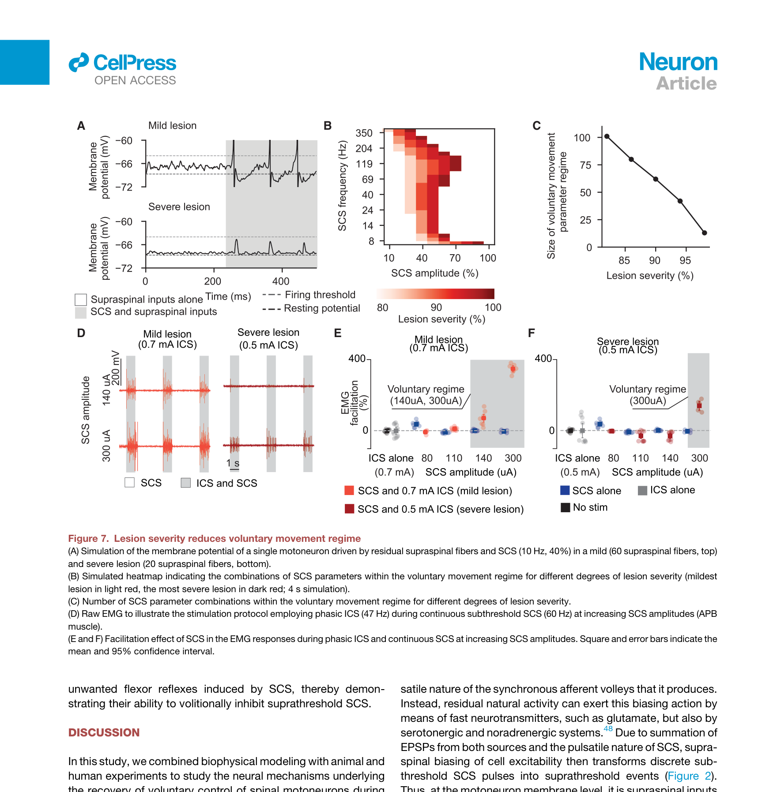
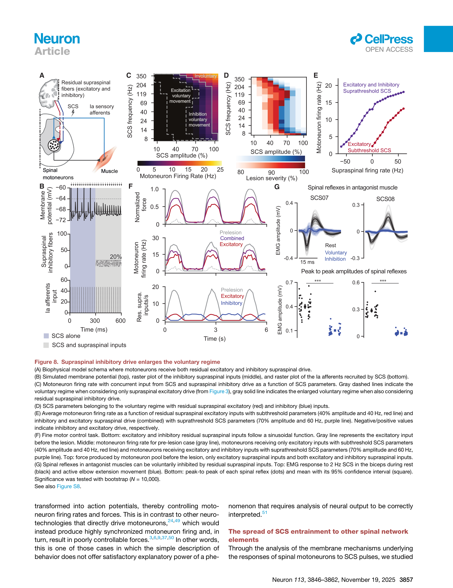

论文精读说明文档
Neural mechanisms underlying the recovery of voluntary control of motoneurons after paralysis with spinal cord stimulation
硬膜外脊髓电刺激如何让瘫痪患者恢复自主运动控制——从生物物理机制到临床验证的完整闭环。
论文信息
Neuron - 2025 - Balaguer - Neural mechanisms ... spinal cord stimulation.pdf
一句话定位
这篇文章的核心论点可以用一个类比来把握：脊髓电刺激（SCS，spinal cord stimulation）不是"调亮基础照明"的开关，而是一台精确的节拍器——每个脉冲提供一次短暂的"过阈机会窗口"，残余脑信号（residual supraspinal input）决定运动神经元（motoneuron）是否抓住这个窗口发放；大脑通过控制"跳过多少个窗口"来调节发放频率，从而实现自主运动（voluntary movement）的恢复。损伤越重，脑信号越弱，能利用的窗口越少，自主运动的参数空间也就越窄。
为什么值得读
过去二十年里，SCS 已从慢性疼痛管理走向脊髓损伤运动恢复的临床前沿。一系列高影响力临床试验（Capogrosso 2016、Angeli 2018、Gill 2018 等）证明了 SCS 能让完全瘫痪患者恢复对肢体的自主控制。然而，为什么 SCS 促进的是"自主"运动而非单纯的被动激活，一直没有令人信服的机制解释，临床参数调整也因此长期依赖经验盲调。
这篇文章之所以值得精读，理由有三层：
- 推翻并取代主流假说。原有假说认为 SCS 通过"持续去极化"使运动神经元膜电位持续接近阈值（即"兴奋性增强"）。本文指出 SCS 是脉冲式的，运动神经元膜时间常数约 2 ms，脉冲之间膜电位早已回到静息，"持续去极化"在物理上站不住脚。它提出的 entrainment 框架在猴子和人类中均得到实验验证。
- 给临床参数优化提供理论地图。文章将整个 SCS 频率×幅度参数空间分成三个区间：完全无效（subthreshold）、仅依赖脑信号才有效（voluntary movement regime）、SCS 自行驱动不受大脑控制（involuntary/suprathreshold regime）。这直接告诉临床医生最优参数在哪个窗口，以及为什么窗口大小与损伤程度相关。
- 机制可能推广到所有脉冲式神经刺激。Entrainment + pulse-skipping 框架同样适用于深部脑刺激（DBS，deep brain stimulation）、迷走神经刺激（VNS，vagus nerve stimulation）等技术，为整个领域提供统一的生物物理语言。
对以电刺激神经调控机制为核心方向的研究者而言，这篇文章提供了一个从"细胞膜电位整合"到"系统级运动控制"的完整链路，每一层都有可操作的量化指标和预测。
术语先说明
图文导读








机制横向对照
| 机制要素 | 传统假说（持续兴奋性增强） | 本文提出的框架（Entrainment + Pulse-skipping） | 实验可区分点 |
|---|---|---|---|
| SCS 对运动神经元的直接效果 | 持续抬升膜电位，使其长期接近阈值 | 每个脉冲产生短暂 EPSP（约 2 ms 时间窗口），脉冲间膜电位回到静息 | 膜时间常数约 2 ms，脉冲间隔远大于此，持续去极化物理上不成立 |
| 脑信号的作用方式 | 在"已抬升"的兴奋性基础上附加额外驱动 | 抬升膜电位基线，使阈下 SCS EPSP 恰好越过阈值——触发与否取决于两者叠加时机 | 配对脉冲实验（ICS 在 SCS 前 5 ms）：EMG 显著增大，且随延迟衰减 |
| 发放频率的调控机制 | 脑信号强度线性叠加到已有发放频率上 | 脑信号控制"跳过多少个 SCS 脉冲"（pulse-skipping），发放频率 = SCS 频率 / 跳脉冲系数 | ISI 分布在 SCS 脉冲间隔整数倍处出现离散峰（而非连续分布） |
| 参数选择依据 | 越大越好，因为兴奋性增强越多越有利 | 存在最优参数窗口（voluntary regime）；过大则进入 involuntary 区，脑信号失去调控能力 | 参数空间热力图实验；力跟踪任务误差在 involuntary regime 显著增大 |
| 损伤严重度的影响 | 损伤越重只是"兴奋性增强"需求越大，可通过提高 SCS 幅度补偿 | 损伤越重，voluntary regime 非线性收缩；提高幅度会直接进入 involuntary 区 | Figure 7 模型预测 + 患者间比较（ASIA A vs. 卒中患者） |
| 抑制性信号的角色 | （假说不涉及） | 抑制性皮层脊髓纤维可在 suprathreshold SCS 下主动压低发放，扩大 voluntary regime | 拮抗肌反射在自主运动时被抑制，休息时不被抑制（SCS07/SCS08） |
和你的研究怎么接上
1. 临床电刺激如何确定参数——voluntary regime 作为系统性搜索目标
差分测量论文的核心价值之一在于提高电刺激期间神经信号的记录质量，而记录质量直接服务于参数优化。本文最重要的临床贡献就是把"参数调优"这件本来靠经验反复试的事，落实到了一张由生物物理机制推导出来的地图上：voluntary regime 在频率×幅度空间里的位置、宽度、与损伤严重度的关系，都有定量预测。
对你来说这意味着：如果研究中需要选取 SCS 参数作为实验变量或对照组条件，可以借用这个框架来系统覆盖 subthreshold / voluntary / involuntary 三个区间，而非随机选参数。这也意味着，只要能准确测量到单运动单元发放模式（例如通过高质量 EMG 记录），就能实时判断当前参数处于哪个 regime——差分测量对伪迹的压制能力，直接影响这种在线判断的可行性。
2. 群体神经元响应与单细胞响应的差距——ISI 分析作为中间层工具
传统的 EMG 看的是整块肌肉的群体活动，无法区分 voluntary 和 involuntary 状态下发放机制的差异。本文的方法论贡献之一正是把表面 EMG 分解到单运动单元层面，用 ISI 分布这个指标区分"锁频主导"和"自主调制主导"两种发放模式。
这对 patch-clamp 背景来说很直觉：单细胞层面的信息（膜电位轨迹、发放时间）和群体层面的信息（力输出、EMG 包络）之间存在巨大差距，中间层（单运动单元发放序列）是把二者关联起来的桥梁。ISI 分布分析是这个桥梁中可无创获取的一环，值得在研究电刺激参数效果时纳入分析工具箱。
3. 脊髓刺激与差分测量在伪迹处理上的共性——时间窗口与共模抑制
本文的 entrainment 机制揭示了一个对电生理记录者来说重要的现象：SCS 期间运动神经元的发放时间被严格锁定到刺激脉冲时间点（约 ±2 ms 内）。这意味着在 SCS 同步记录神经信号时，刺激伪迹和真实神经响应在时间轴上高度重叠——不能简单地用"刺激后若干毫秒开始看"来回避伪迹。
差分测量的共模抑制（CMRR，common-mode rejection ratio）在这个场景下尤为关键：SCS 脉冲在两个差分通道上产生的共模伪迹如果得不到充分压制，就会淹没紧随其后的 EPSP 诱发响应。本文 Figure 5 的 paired-pulse 实验（SCS 与 ICS 间隔 5 ms）所能提取的信号，正是测量链路 CMRR 和时间分辨率的综合考验。从这个角度看，改善差分测量性能与理解 entrainment 机制是相互服务的——前者是工程工具，后者是使用这个工具的场景。
证据链和局限
- 猴子实验在麻醉下进行，ICS 不等于真正的自主皮层信号。深部电刺激内囊（ICS）能激活皮层脊髓纤维，但无法完全模拟清醒状态下的皮层自主活动（如动态编码的运动意图、反馈修正）。麻醉下的验证只能证明 EPSP 叠加和 entrainment 的物理可行性，无法证明"自主性"来源于脑信号。
- 模型仅考虑 Ia 单突触通路，忽略多突触通路。脊髓运动回路中还有 Ib 纤维、II 类纤维、中间神经元（interneurons）、中枢模式发生器（CPG）等多突触通路，这些通路可能在低频 SCS 下提供更持久的兴奋性输入，部分支持"持续兴奋性增强"机制。作者在 limitation 中承认了这一简化。
- 人类样本量极小。主要验证实验只涉及 1 名脊髓损伤患者和 2 名卒中患者，用于抑制实验的又是另外 2 名患者。个体差异可能很大，统计检验力有限。
- 未涉及长期可塑性。模型只关注急性（单次刺激）效应，无法解释 SCS 数周训练后的功能持续改善。长期效应可能涉及 Hebbian 突触可塑性和环路重组，与本文机制正交。
- 抑制性通路的人类验证较间接。Figure 8G 用"自主伸肘时拮抗肌反射被抑制"来支持抑制性皮层脊髓投射的作用，但这个设计不能排除脊髓内中间神经元介导的拮抗抑制（reciprocal inhibition），不能直接证明皮层脊髓抑制性纤维在起作用。
- 力输出模型做了简化。从运动神经元发放到力输出采用了 Fuglevand 模型，未纳入肌肉疲劳、共收缩、肌腱弹性等因素，实际临床场景中力跟踪误差可能比模型预测更大。
建议阅读顺序
- 先读 Introduction 最后两段：作者在此明确区分了旧假说（持续兴奋性增强）与本文的新框架，这是理解全文论证逻辑的入口。
- 看 Figure 3（参数空间三区间图）：即使不读正文，这张图已经传递了本文最重要的临床含义。先对这张图建立直觉，再回头读 Figure 1–2 的模型细节。
- 读 Figure 2（模型核心结果）：重点看面板 F–I 的 ISI 分布——这是 entrainment 的特征指纹，后续所有实验层都在验证这个特征。
- 读 Figure 5（猴子实验）：关注 paired-pulse 实验的时间窗口逻辑，这是唯一能直接测量 EPSP 叠加效应的部分。
- 读 Figure 6（人类实验）：重点看 STIM01 的单运动单元 ISI 分布，这是全文最直接的临床证据。
- 最后读 Figure 7–8（损伤严重度 + 抑制性信号）：这两层拓展了框架，适合在理解核心机制后作为延伸阅读。
- 通读 Discussion 的前三段：作者在此对每一层证据做了审慎的自我评估，比 Results 更适合快速判断结论的可靠边界。